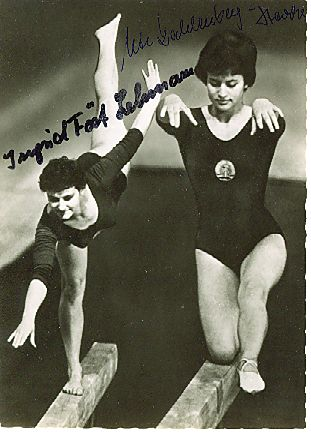

Ute Starke (GDR)
1961 European V Champion

Starke (right) won 3 gold medals
at the
1961 GDR Championships.
Medal Total
Olympic Games: 1
Bronze
European Championships: 1 Gold, 1 Silver
Ute was born on January 14, 1939, in Eisleben. Ute began gymnastics at age 12 and trained at SC Lokomotiv Leipzig/SC Leipzig with coaches Ellen Berger and Sylvia Hlavacek. Starke was the first female gymnast to perform a Yamashita vault, which she debuted at the 1963 GDR Gymfest. In 1961, Ute was voted GDR Sportswoman of the Year. She retired from the sport in 1968 and became a coach.
Competition Results
1957
9th Berlin Gymnastics Meet: 6th AA
GDR Championships: 8th AA
POL-GDR Dual Meet: 1st Team, 3rd AA
1958
GDR Championships: 5th AA
World Championships: 9th Team, 42nd AA
YUG-GDR Dual Meet: 1st Team, 2nd AA
1959
CSSR-GDR Dual Meet: 2nd Team, 13th AA
GDR-ROM Dual Meet: 1st Team, 7th AA
GDR-ROM-FRA Dual Meet: 1st Team, 6th AA
1960
Berlin International: 1st AA
GDR-BUL Dual Meet: 1st Team, 3rd AA
GDR Championships: 3rd AA, 2nd B, 2nd FX, 3rd UB, 4th V
GDR-CSSR Dual Meet: 2nd Team, 6th AA, 3rd V
HUN-GDR Dual Meet: 2nd Team, 4th AA
Olympic Games: 6th Team, 31st AA
POL-GDR Dual Meet: 2nd Team, 2nd AA
ROM-GDR-POL: 2nd Team, 4th AA
1961
European Championships: 5th AA, 1st V, 4th B, 4th FX
GDR Championships: 2nd AA, 1st V, 1st UB, 1st FX
Prague International Meet: 1st AA, 1st V, 1st UB, 4th B, 4th FX
1962
GDR Championships: 2nd AA, 1st V, 1st UB, 2nd B, 6th FX
SWE-GDR Dual Meet: 1st Team, 1st AA
Warsaw International: 1st AA, 1st UB, 1st B
1963
GDR Championships: 5th AA, 1st UB, 4th FX, 5th B
GDR-CSSR Dual Meet: 2nd Team, 8th AA
GDR-ROM Dual Meet: 1st Team, 6th AA
1964
BUL-GDR Dual Meet: 1st Team, 2nd AA
CSSR-GDR Dual Meet: 2nd Team, 5th AA
GDR Championships: 5th AA, 2nd V, 3rd UB, 3rd FX
GDR-SWE Dual Meet: 1st Team, 4th AA
GDR-USSR Dual Meet: 1st Team, 3rd AA
Olympic Games: 4th Team, 6th AA, 6th V
POL-GDR-HUN: 1st Team, 4th AA
1965
European Championships: 7th AA, 2nd V
GDR Championships: 1st AA, 1st B, 3rd V, 3rd FX, 6th UB
GDR-SWE Dual Meet: 1st Team, 2nd AA
1966
POL-GDR Dual Meet: 1st Team, 3rd AA
SWE-GDR Dual Meet: 1st Team, 1st AA
Tbilisi Invitational: 5th AA
World Championships: 4th Team, 23rd AA, 4th V
Yerevan International: 2nd UB, 5th VT
1967
GDR Championships: 6th AA, 4th V
GDR-POL Dual Meet: 1st Team, 3rd AA
GDR-ROM Dual Meet: 1st Team, 5th AA
1968
GDR-BUL Dual Meet: 1st Team, 6th AA
GDR Championships: 4th AA, 3rd V, 5th B, 6th UB
Olympic Games: 3rd Team, 22nd AA
This page was created on November
12, 2005 and was last updated on April 24, 2026.
© Gymn Forum